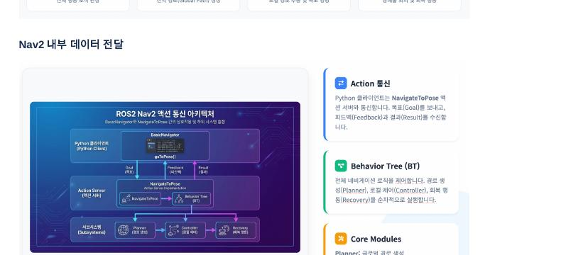
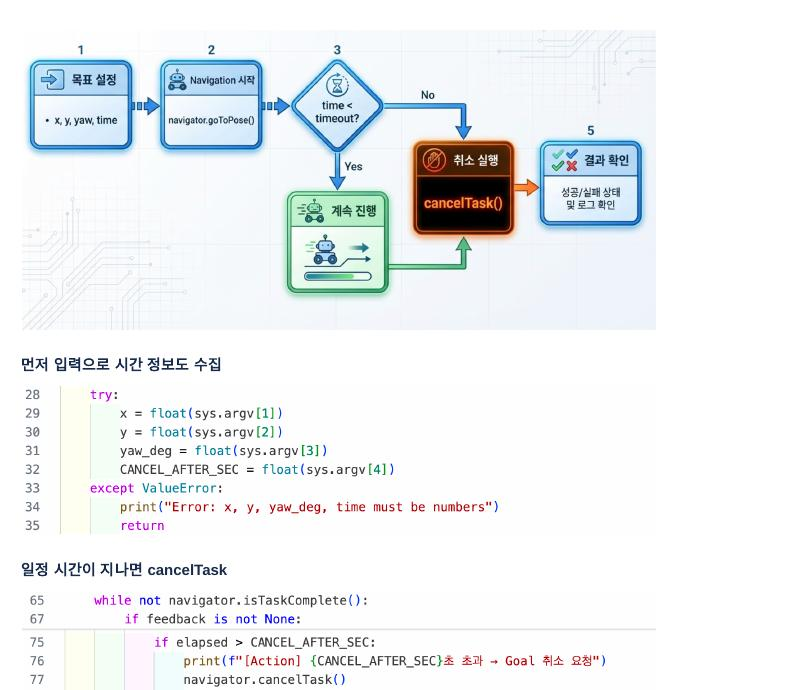
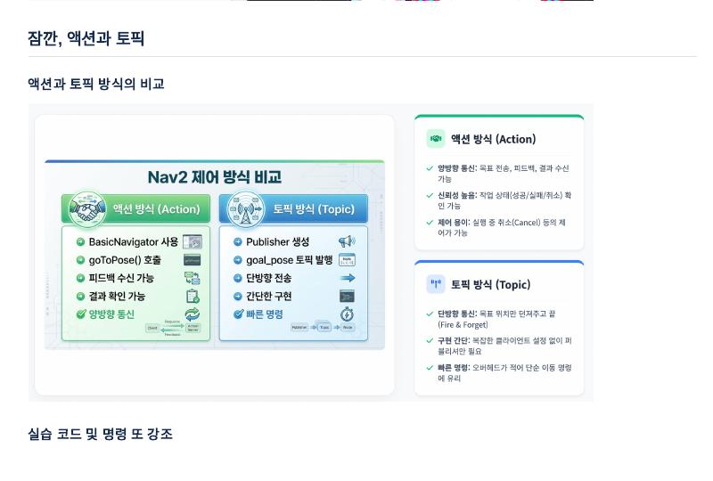

BasicNavigator 액션 방식을, 결과 확인이 필요 없는 단순 목표 전달에는 /goal_pose 토픽 방식을 사용할 수 있습니다.오늘의 목표
강의자료 15쪽 핵심
- 액션 제어:
BasicNavigator.goToPose()로 정확한 목표 자세를 전송합니다. - 상태 확인: 남은 거리와 경과 시간을 feedback으로 읽고 최종 결과를 확인합니다.
- Timeout: 제한 시간을 넘기면
cancelTask()로 안전하게 정지시킵니다. - 토픽 제어:
PoseStamped를/goal_pose에 직접 발행합니다. - 방식 선택: 액션과 토픽의 장단점을 이해하고 목적에 맞게 선택합니다.
Pose는 위치와 방향을 합친 값
Position + Orientation + 기준 Frame
PoseStamped
├─ header.frame_id = "map" 어느 좌표계 기준인가?
├─ header.stamp 어느 시각의 값인가?
└─ pose
├─ position (x, y, z) 어디에 도착할 것인가?
└─ orientation (x,y,z,w) 도착 후 어디를 볼 것인가?목표는 단순한 점이 아닙니다. 같은 x=0, y=1에서도 방향이 0°이면 +X를 보고, 90°이면 +Y를 보며 도착합니다. frame_id='map'은 이 좌표가 지도 원점을 기준으로 한다는 뜻입니다. frame이 없거나 틀리면 Nav2는 목표의 실제 위치를 해석할 수 없습니다.
Yaw와 Quaternion
- Yaw: 평면에서 Z축을 중심으로 회전한 각도입니다.
- 0°: +X 방향, 90°: 반시계 방향의 +Y, −90°: 시계 방향, 180°: −X 방향입니다.
- Quaternion: ROS가 3차원 회전을 표현하는
x, y, z, w네 값입니다. Euler 각도의 특이점 문제를 피합니다.
degree ── math.radians() ──→ radian
radian ── quaternion 변환 ──→ orientation x,y,z,w2D yaw만 사용할 때는 일반적으로 quaternion의 x와 y가 0이고, z와 w에 회전값이 들어갑니다.
Action은 오래 걸리는 작업을 관리하는 통신
Goal + Feedback + Result + Cancel
Python Action Client NavigateToPose Action Server
───── Goal ───────────────→ 목표 수락·거절
←── Feedback 반복 ───────── 남은 거리·경과 시간
←──── Result ─────────────── 성공·취소·실패
───── Cancel ──────────────→ 작업 취소 요청- Goal: 수행할 목표 Pose입니다.
- Feedback: 작업 도중 반복해서 도착하는 진행 정보입니다.
- Result: 작업이 끝난 뒤 한 번 정해지는 최종 상태입니다.
- Cancel: 진행 중인 목표를 중단해 달라는 요청입니다.
Feedback과 Result는 다릅니다. 남은 거리가 0에 가까운 feedback을 받았다고 성공이 확정된 것은 아니며, 최종적으로 TaskResult.SUCCEEDED인지 확인해야 합니다. 마찬가지로 cancelTask() 호출은 취소 요청이고, 실제 결과가 CANCELED로 바뀌어야 취소가 완료된 것입니다.
프로세스가 떠 있는 것과 Nav2가 준비된 것은 다르다
Lifecycle과 waitUntilNav2Active
unconfigured → inactive → active → finalized
설정 전 설정됨 동작 가능 종료Nav2의 주요 서버는 Lifecycle Node입니다. 터미널에 프로세스가 보이더라도 아직 inactive이면 목표를 처리할 준비가 되지 않았습니다. navigator.waitUntilNav2Active()는 AMCL과 Nav2가 active 상태가 될 때까지 기다려 너무 일찍 목표를 보내는 문제를 막습니다.
- unconfigured: 파라미터와 내부 자원이 아직 준비되지 않은 상태
- inactive: 설정은 완료됐지만 센서 처리와 액션 수행이 비활성인 상태
- active: 목표를 받고 planner·controller를 실행할 수 있는 상태
/goal_pose의 구독자 수가 1 이상인 것과 Nav2가 active인 것도 다릅니다. DDS 연결은 존재해도 lifecycle이 inactive이면 정상 주행을 보장할 수 없습니다.
Blocking loop, DDS Discovery, 시간 기준
코드가 실행되는 방식을 이해
Blocking 형태의 모니터링
while not navigator.isTaskComplete():
feedback = navigator.getFeedback()
# 이 반복문이 끝날 때까지 다음 코드로 넘어가지 않음이 구조는 현재 함수의 실행 흐름을 목표 완료까지 붙잡습니다. 이해하기 쉽지만 같은 스레드에서 다른 일을 동시에 해야 한다면 callback, timer, 별도 thread 또는 비동기 구조가 필요합니다. 반복문 안에서 아무 대기 없이 계속 조회하면 CPU를 과도하게 사용하므로 짧은 sleep이나 적절한 spin이 필요합니다.
DDS Discovery와 첫 메시지
ROS 2의 publisher와 subscriber는 DDS를 통해 서로를 발견합니다. 노드 실행 직후 discovery가 끝나기 전에 토픽을 한 번만 발행하면 subscriber가 메시지를 못 받을 수 있습니다. get_subscription_count()는 연결 여부를 확인하는 보조 수단이지만 목표 처리 성공을 보장하지는 않습니다.
ROS 시간과 실제 시간
ROS Simulation Time
Gazebo의 /clock을 사용합니다. 시뮬레이션을 멈추면 ROS 시간도 멈추므로 시뮬레이션 내부 동작 기준 timeout에 적합합니다.
Wall Time
time.time()이나 monotonic clock처럼 실제 컴퓨터에서 흐르는 시간입니다. Gazebo를 일시 정지해도 계속 흐릅니다.
“시뮬레이션상 5초” 뒤 취소하려는지, “사용자가 실제로 기다린 5초” 뒤 취소하려는지에 따라 시간 기준을 선택해야 합니다. 경과시간 계산에는 시스템 시각 변경 영향을 받지 않는 time.monotonic()이 안전한 경우가 많습니다.
Gazebo·Nav2·RViz2 사전 준비
13번 환경을 그대로 사용
- Gazebo 시뮬레이션을 실행합니다.
bringup_launch.xml로 Nav2 전체 스택을 실행합니다.- RViz2를 열고 2D Pose Estimate로 지도와 LaserScan을 정렬합니다.
- Python 목표의 좌표가
mapframe 기준인지 확인합니다.
강의 예시는 지도상의 x=0, y=1 지점을 사용합니다. 좌표는 화면 픽셀 위치가 아니라 지도 원점과 축을 기준으로 한 미터 단위입니다.
BasicNavigator로 액션 목표 전송
nav2_simple_commander
import rclpy
from geometry_msgs.msg import PoseStamped
from nav2_simple_commander.robot_navigator import (
BasicNavigator, TaskResult)
rclpy.init()
navigator = BasicNavigator()
navigator.waitUntilNav2Active()BasicNavigator는 Nav2 액션 클라이언트를 사용하기 쉽게 감싼 Python API입니다.waitUntilNav2Active()는 Nav2 lifecycle 노드가 활성화될 때까지 기다립니다.goToPose()를 호출하면 내부적으로/navigate_to_pose액션 서버에 목표를 전달합니다.

목표 PoseStamped 만들기
위치 x·y + 방향 quaternion + map frame
import math
def yaw_deg_to_quat(deg):
yaw = math.radians(deg)
return (0.0, 0.0,
math.sin(yaw / 2.0),
math.cos(yaw / 2.0))
x, y, yaw_deg = 0.0, 1.0, 90.0
q = yaw_deg_to_quat(yaw_deg)
goal = PoseStamped()
goal.header.frame_id = 'map'
goal.header.stamp = navigator.get_clock().now().to_msg()
goal.pose.position.x = x
goal.pose.position.y = y
goal.pose.orientation.x = q[0]
goal.pose.orientation.y = q[1]
goal.pose.orientation.z = q[2]
goal.pose.orientation.w = q[3]
navigator.goToPose(goal)- Position:
x, y는 지도 안의 목표 위치입니다. - Orientation:
yaw_deg는 도착 후 바라볼 방향이며 quaternion으로 변환합니다. - Frame:
map을 넣지 않으면 목표 좌표의 기준을 Nav2가 알 수 없습니다. - Stamp: 현재 시각을 넣어 TF가 어느 시간의 변환을 사용할지 판단하게 합니다.
진행 상황과 최종 결과 확인
isTaskComplete · getFeedback · getResult
while not navigator.isTaskComplete():
feedback = navigator.getFeedback()
if feedback is not None:
print('남은 거리:', feedback.distance_remaining)
print('경과 시간:', feedback.navigation_time.sec)
result = navigator.getResult()
if result == TaskResult.SUCCEEDED:
print('목표에 도착했습니다.')
elif result == TaskResult.CANCELED:
print('목표가 취소됐습니다.')
elif result == TaskResult.FAILED:
print('목표 수행에 실패했습니다.')액션은 목표를 한 번 보낸 뒤 끝나는 호출이 아닙니다. 서버가 목표 수락 여부, 진행 feedback, 성공·취소·실패 결과를 돌려주므로 상위 프로그램이 다음 행동을 결정할 수 있습니다.
정해진 시간이 지나면 cancelTask
수동 Timeout 만들기
cancel_after_sec = float(sys.argv[4])
start = time.time()
while not navigator.isTaskComplete():
elapsed = time.time() - start
if elapsed > cancel_after_sec:
navigator.cancelTask()
break
time.sleep(0.5)
- 취소 요청 직후 결과가 즉시 확정된다고 가정하지 말고 task 상태가 바뀌는지 확인해야 합니다.
- 시뮬레이션 일시정지까지 고려한다면 Python의 벽시계와 ROS simulation time 중 어떤 시간을 쓸지 의도적으로 선택해야 합니다.
- Timeout은 단순히 느린 로봇을 멈추는 기능이 아니라 막힘·경로 실패에서 상위 로직이 복구할 기회를 만드는 안전장치입니다.
/goal_pose 토픽으로 목표 발행
PoseStamped · Fire-and-Forget
from rclpy.node import Node
from geometry_msgs.msg import PoseStamped
class GoalPosePublisher(Node):
def __init__(self):
super().__init__('pinky_goal_pose_publisher')
self.publisher = self.create_publisher(
PoseStamped, '/goal_pose', 10)
def send_goal_pose(self, x, y, yaw_deg):
msg = self.make_msg(x, y, yaw_deg)
self.publisher.publish(msg)메시지의 header.frame_id, timestamp, 위치, quaternion 구성은 액션 방식과 같습니다. 다만 publish 성공은 Nav2의 목표 수락이나 도착 성공을 뜻하지 않습니다.
get_subscription_count()의 의미와 한계
DDS에서 발견된 구독자 수
count = node.publisher.get_subscription_count()
if count == 0:
print('아직 /goal_pose 구독자가 없습니다.')- 반환값은 해당 publisher와 연결된 subscriber 수입니다.
0이면 아직 구독자가 발견되지 않았으므로 즉시 발행한 메시지를 아무도 받지 못할 수 있습니다.1이상이라고 Nav2가 활성 상태이거나 목표를 성공적으로 처리한다는 보장은 없습니다.- 강의에서 여러 번 발행하는 이유는 시작 직후 DDS discovery 전에 한 번만 보낸 메시지가 유실될 가능성을 줄이기 위해서입니다.
- 목표를 여러 번 보내면 목표가 반복 갱신될 수 있으므로 실전에서는 transient QoS, readiness 확인 또는 액션 방식을 권장합니다.
액션과 토픽, 무엇을 선택할까?
양방향 작업 관리 vs 단순 명령 전달

액션 방식
- 목표 수락 여부 확인
- 남은 거리·시간 feedback
- 성공·실패·취소 결과
cancelTask()로 취소- 자율주행 프로그램에 적합
토픽 방식
- 코드가 짧고 즉시 발행
- 단방향 Fire-and-Forget
- 완료·실패 결과 없음
- 별도 상태 관리 필요
- 테스트·단순 명령에 적합
핵심 실행 명령
13번과 동일하게 Gazebo → Nav2 → RViz2 순서로 실행한 뒤 네 번째 터미널에서 Python 코드를 실행합니다.
# 터미널 1 — Gazebo
pk_gz
# 터미널 2 — Nav2 전체 실행
pk_nav
# 터미널 3 — RViz2
pk_rviz
# 터미널 4 — 액션 방식
cd ~/pinky_ws/src
source /opt/ros/jazzy/setup.bash
source ~/pinky/install/setup.bash
python3 nav2_send_goal_basic.py 0 1 0
# 터미널 4 — 5초 timeout 액션 방식
python3 nav2_send_goal_cancel_code.py 0 1 0 5
# 터미널 4 — /goal_pose 토픽 방식
python3 topic_goal_pose_publisher.py 0 -1 0실행 전 체크
- RViz2의 Navigation·Localization 상태가 active인지 확인합니다.
- 2D Pose Estimate 후 LaserScan이 지도 벽과 일치하는지 확인합니다.
- Python 파일이 실제로 저장된 폴더에서 실행합니다.
- 목표 좌표가 벽이나 inflation 영역 안이 아닌지 확인합니다.
- 강의 코드 파일명은
nav2_send_goal_basic.py,nav2_send_goal_cancel_code.py,topic_goal_pose_publisher.py입니다.